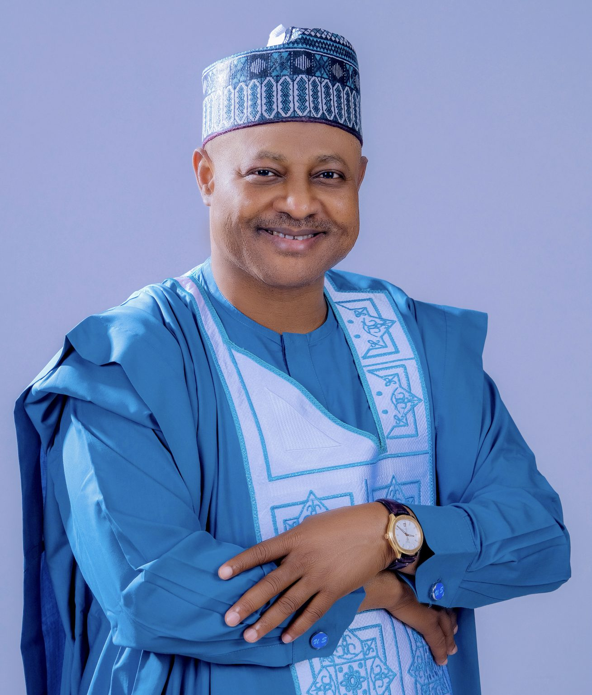
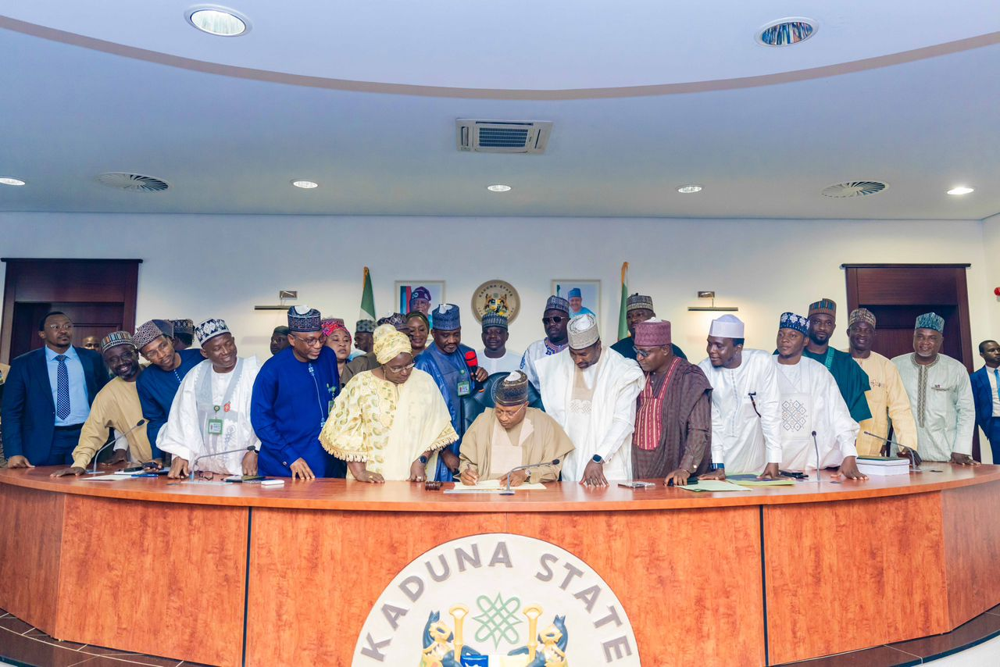
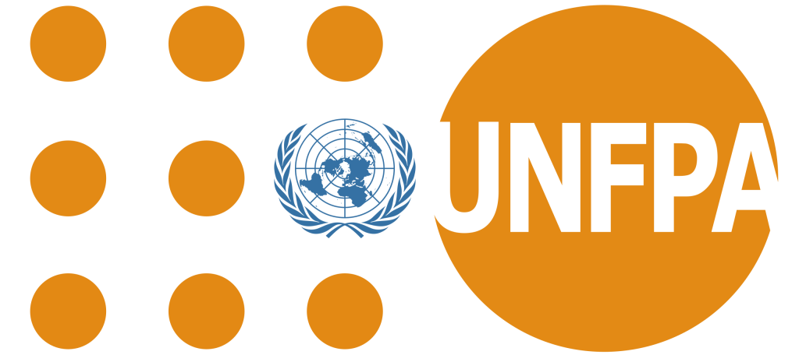

KADPBC KICKSTARTS "KADUNA BUDGETFLOW" SYSTEM TO REVOLUTIONIZE PUBLIC FINANCIAL MANAGEMENT.
The Hon. Commissioner, Planning and Budget Commission (PBC), Mukhtar Ahmed chaired a project kickoff and technical presentation meeting held at...
READ MORE »... creating a vibrant economy for improvement of the living standards of the people of Kaduna State.
The Commission had undergone several changes. It was a full-fledged Ministry under the former civilian regime of 1979-1980. It was later changed to the Directorate of Budget and Planning within the Ministry of Finance (MoF) under successive military administrations. Subsequently,
it was upgraded to the Bureau of Budget and Planning and later became the Kaduna State Planning and Budget Commission by Law No. 2017. The Commission comprises five departments, two stand-alone units and two parastatals.
A world class and dynamic Planning and Budget Agency creating a vibrant economy for improvement of the living standards of the people of Kaduna State.
To serve as an effective machinery for the formulation, coordination, monitoring and evaluation of Government economic policies, plans and budgets to enhance the socio-economic development of the state and its people using a competent and well-motivated workforce.
Dedication. Integrity. Team Work. Employee care and development.
Senator Uba Sani is a Nigerian politician who is the Governor of Kaduna State whose tenure started in May 2023. He was previously the Senator representing Kaduna Central Senatorial District from 2019 to 2023. He had also served as a Senior Special Assistant to President Olusegun Obasanjo, a Special Adviser to the Minister of the FCT on Political Affairs, and a Special Adviser on Political Affairs and Intergovernmental Relations to Governor Nasir El-Rufai.

Welcome to the official website of the Kaduna State Planning and Budget Commission (KSPBC). As the state's premier institution for economic planning and fiscal management, we are committed to driving sustainable development through effective policy formulation and budget implementation.
Our dedicated team works tirelessly to ensure optimal resource allocation for creating a lasting positive impact across all sectors of our economy. I invite you to explore our website and learn more about how we are working to create a vibrant economy and improve living standards for the people of Kaduna State.

Welcome to our comprehensive document repository where you can access essential planning and budget-related materials for Kaduna State. We've organized our documents into three main categories to help you find exactly what you need:
Click below to access our download section
DownloadsExplore our collection of state budgets, including annual appropriation bills, budget implementation reports, and citizens' budgets. These documents provide detailed insights into the state's financial planning and resource allocation.
Access key policy frameworks, development plans, and strategic documents that guide our state's economic direction. This section includes medium-term sector strategies, economic blueprints, and planning guidelines.
Find our periodic performance reports, economic reviews, statistical bulletins, and evaluation documents. These publications offer detailed analysis and updates on the state's economic progress and development initiatives.
The Hon. Commissioner, Planning and Budget Commission (PBC), Mukhtar Ahmed chaired a project kickoff and technical presentation meeting held at...
READ MORE »
As part of its sustained campaign to eradicate malnutrition, the Kaduna State Planning and Budget Commission (KADPBC), with support from...
READ MORE »
The Kaduna State Government, through the Planning and Budget Commission (KADPBC), has hosted the State Steering Committee Meeting on Donor-Funded...
READ MORE »
DATE: 06 JUNE, 2024 1. PREAMBLE A one-day High-Level Dialogue on Local Government Nutrition Financing was convened at Bafra Hotel...
READ MORE »
The Permanent Secretary, Planning and Budget Commission (KADPBC), Mukhtar Abdullah, alongside the Commission's management team, officially welcomed a delegation from...
READ MORE »
The Kaduna State Government through the Planning and Budget Commission has convened a high-level stakeholders' meeting to brief key participants...
READ MORE »
Social Media
Handle KADPBC